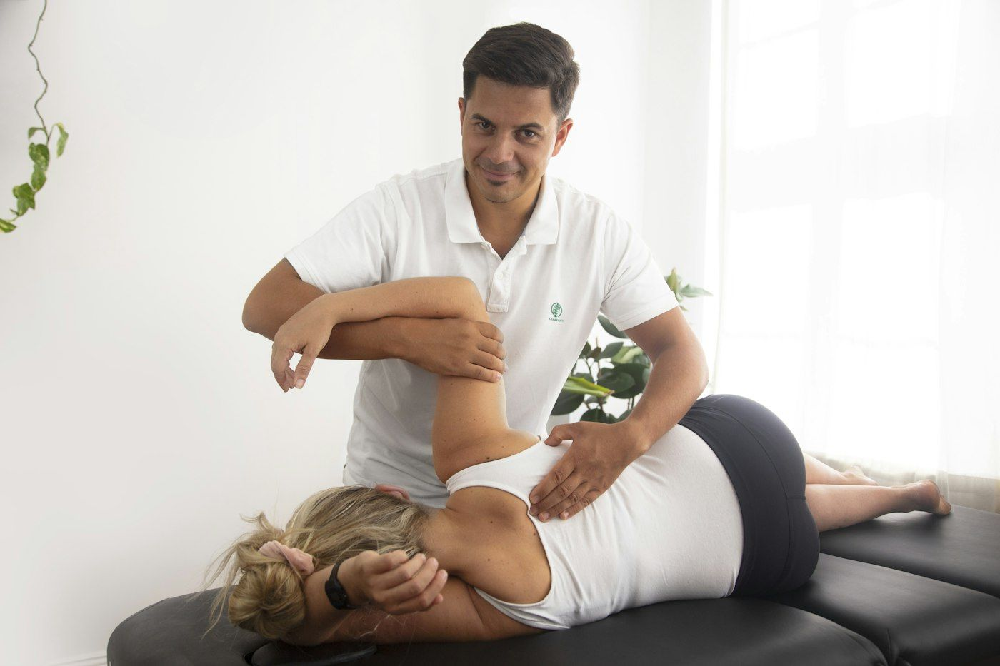

Plain-language answers about your spine, your care at Bruno Chiropractic, and what you can do at home between visits. This page is general information, not a diagnosis; the doctors will talk with you about your own situation.

To Your Health newsletter
To Your Health is a free health and wellness e-newsletter written for chiropractic patients, with new issues on exercise, nutrition, injury prevention and everyday health. It's published by MPA Media, the publisher of Dynamic Chiropractic.
Chiropractic care focuses on the spine, joints, muscles and nerves, and on how problems in them affect the way you move and feel. A doctor of chiropractic examines how you move, finds joints that are restricted or irritated, and treats them with hands-on or instrument-assisted adjustments, exercise and supporting therapies. Care is drug-free and non-surgical. When a problem needs a different kind of care, a chiropractor refers you to the right provider.
Doctors of chiropractic complete a four-year doctoral program after undergraduate study, pass national board exams, and are licensed by the state. In Rhode Island, licensing is overseen by the Board of Chiropractic Examiners. Dr. David Bruno is a past chairman of that board.
What happens during an adjustment?
An adjustment applies a quick, controlled force to a joint to improve how it moves. You may hear a pop, which is gas releasing from the fluid inside the joint, the same thing that happens when you crack your knuckles. Most people feel little or no discomfort. Some feel mild soreness for a day afterward, similar to after exercise.
Your spine, simply explained
Your spine is a column of 24 movable bones called vertebrae, with the sacrum and tailbone at its base. It holds you upright, lets you bend and twist, and protects the spinal cord.
Neck (cervical)7 vertebrae. Supports your head and allows the widest range of motion.
Upper and mid back (thoracic)12 vertebrae, each attached to a pair of ribs.
Low back (lumbar)5 vertebrae, the largest in the spine, carrying the most body weight.
Sacrum and tailboneFused bones that connect the spine to the pelvis.
Key structures
Discs sit between the vertebrae and act as cushions. Each has a tough outer ring and a gel-like center.
Facet joints are small paired joints at the back of each vertebra that guide and limit movement.
The spinal cord and nerves run through a canal in the vertebrae. Nerves branch out between the bones to your arms, trunk and legs, which is why a neck problem can cause arm symptoms and a low back problem can cause leg symptoms.
Muscles and ligaments hold the spine together, keep it stable and move it.
Where is your pain?
Choose an area to read about the conditions we see most often there.
A quick, controlled movement applied by hand to a restricted joint to restore motion.
Activator Method
A gentle adjustment using a small hand-held instrument that delivers a quick, low-force impulse. Often preferred by people who want a lighter touch. Dr. David Bruno is Advanced Activator Proficiency rated.
McKenzie Method
An approach that looks at how your symptoms respond to specific repeated movements and positions, then teaches exercises you can do on your own. Dr. Erika Bruno is certified for the full spine.
Kinesiology taping (RockTape)
Stretchy tape applied to the skin to support muscles and joints while you move. Dr. Erika Bruno is RockTape certified.
Therapeutic ultrasound
Sound waves that create gentle, deep warmth in muscles and soft tissue.
Muscle stimulation
A mild electrical current delivered through pads on the skin to ease muscle spasm and pain.
Neck or back pain after a serious fall or car accident
New loss of bladder or bowel control, or numbness in the groin or inner thighs
Weakness in an arm or leg that is getting worse
Chest pain, or pain with shortness of breath, sweating or nausea
A sudden, severe headache, or a headache with fever and a stiff neck, confusion, vision changes or trouble speaking
Back pain with a fever
Everyday spine care
At your desk
Keep the top of your screen near eye level and about an arm's length away. Sit with feet flat and your low back supported. Stand up and move every 30 to 60 minutes.
Lifting
Keep the load close to your body, bend at your hips and knees, and tighten your stomach muscles. Turn with your feet instead of twisting. Get help with anything heavy or awkward.
Sleeping
On your side, put a pillow between your knees. On your back, put one under your knees. Use a pillow that keeps your neck level. Stomach sleeping often strains the neck.
Phones and tablets
Raise the screen toward eye level instead of dropping your head. Long stretches looking down load the neck.
Backpacks
Use both straps and pack the heaviest items closest to the back. For children, a common guideline is a pack weighing no more than about 10% of body weight.
In the car
Sit so your knees are about level with your hips, use the lumbar support, and stop to stretch on long drives.
Coping with pain at home
Stay gently active. For most everyday back and neck pain, easy movement such as walking helps more than bed rest.
Ice or heat. Ice, wrapped in a thin towel for 15 to 20 minutes, is often used in the first day or two after a new strain. Heat often helps stiff, tight muscles. Never put either directly on bare skin.
Change positions often. Avoid sitting or standing in one position for long periods while you recover.
Call us if it isn't improving after a few days, or sooner if it's getting worse. See when to seek care.
Gentle exercises
Ask the doctor before starting if you have a new injury, recent surgery, osteoporosis, or pain that travels into an arm or leg. Move slowly and stop if pain increases or spreads.
Neck
Chin tucks
Sit or stand tall with your eyes level.
Gently draw your chin straight back, as if making a double chin.
Hold for 3 to 5 seconds, then relax.
Repeat 10 times.
Upper back
Shoulder blade squeezes
Sit tall with your arms relaxed at your sides.
Squeeze your shoulder blades together and slightly down.
Hold for 5 seconds, then relax.
Repeat 10 times.
Low back
Knee-to-chest stretch
Lie on your back with both knees bent.
Hold behind one thigh and bring that knee toward your chest.
Hold 20 to 30 seconds, then switch sides.
2 to 3 times on each side.
Low back
Pelvic tilts
Lie on your back with knees bent and feet flat.
Tighten your stomach muscles to flatten your low back against the floor.
Hold for 5 seconds, then relax.
Repeat 10 times.
Whole spine
Cat–cow
Start on your hands and knees.
Slowly round your back up toward the ceiling.
Then let your back gently sag as you lift your head.
10 slow repetitions.
Glossary
Cervical
The neck region of the spine.
Thoracic
The upper and mid-back region, where the ribs attach.
Lumbar
The low back region.
Sacrum
The triangle-shaped bone at the base of the spine that joins the pelvis.
Vertebra
One of the bones that make up the spine (plural: vertebrae).
Disc
The cushion between two vertebrae.
Disc herniation
When part of a disc's soft center pushes through its outer ring, which can press on a nerve.
Facet joint
A small joint at the back of each vertebra that guides movement.
Sciatica
Pain, tingling or numbness along the sciatic nerve, from the low back or buttock down the leg.
Spinal stenosis
Narrowing of the spaces around the spinal cord or nerves.
Osteoarthritis
Wear-related changes in joint cartilage that can cause stiffness and pain.
Subluxation
In chiropractic, a joint that isn't moving or aligned normally and may irritate nearby tissues.
Range of motion
How far a joint can move in each direction.
Whiplash
A neck injury from a sudden back-and-forth motion, often in a car accident.